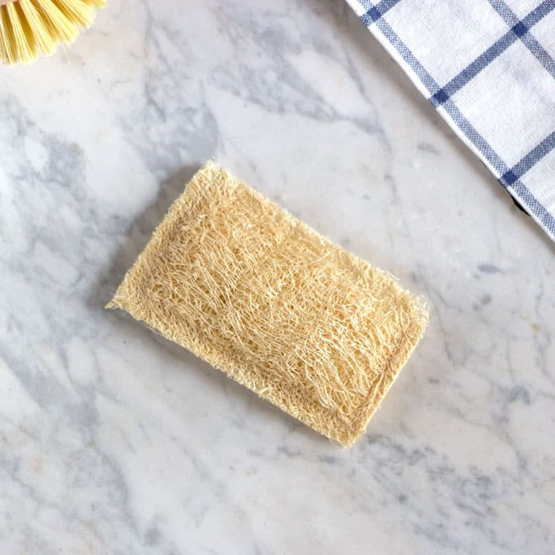
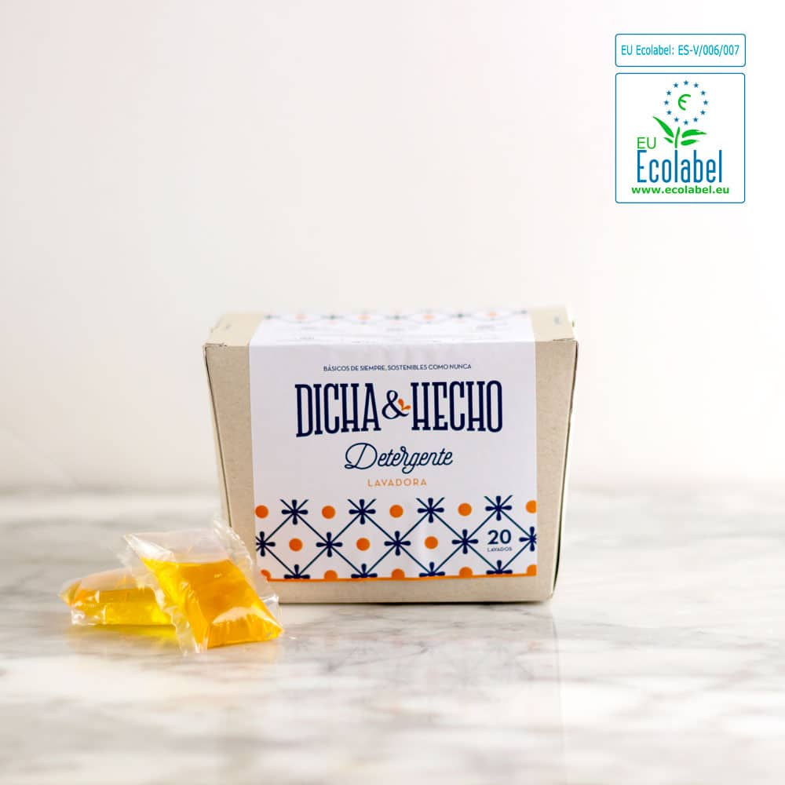
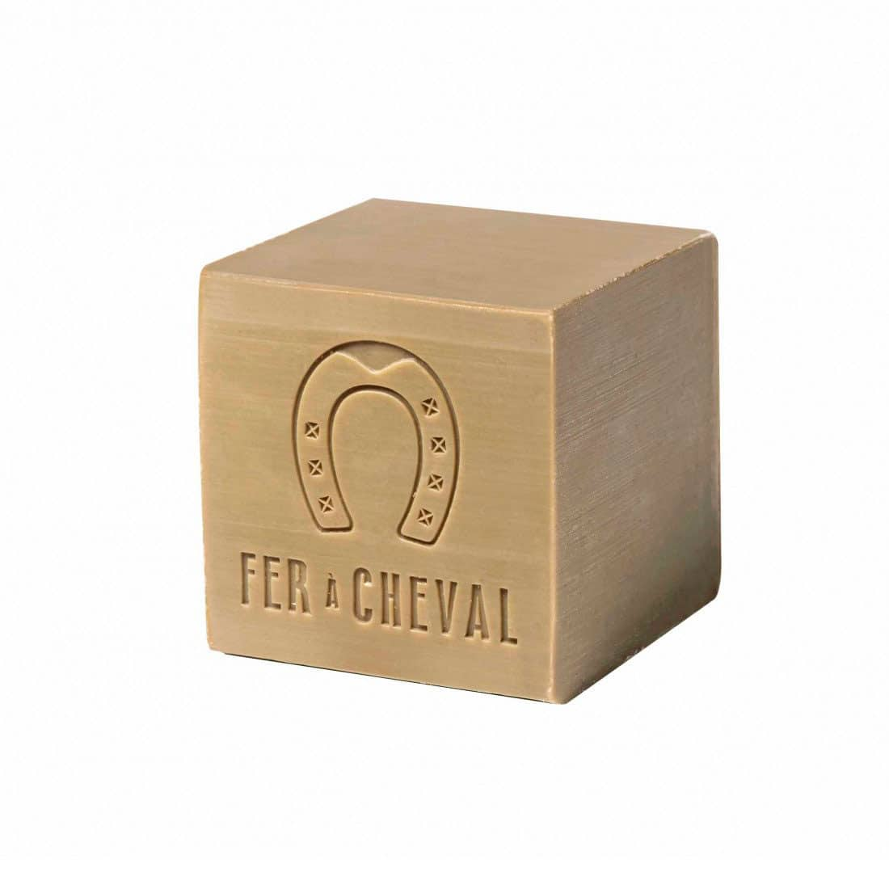

Estropajo vegetal de luffa • Esturirafi
Estropajo vegetal de luffa cultivada en Galicia, según su ficha.
Ver ficha oficial ↗HOGAR • LIMPIEZA • REUTILIZABLES
Explora tres básicos del hogar y prepara la próxima reposición según lo que utilizas de verdad.

Tres referencias reales. Las opciones, precios y existencias se confirman en la tienda oficial.
Estropajo vegetal de luffa cultivada en Galicia, según su ficha.
Ver ficha oficial ↗
Detergente para lavadora presentado en 20 cápsulas monodosis.
Ver ficha oficial ↗
Jabón de Marsella sólido en formato de 300 g.
Ver ficha oficial ↗TU LISTA LOCAL
Tu selección queda en este navegador. No reserva productos ni envía pedidos.
Esturirafi organiza el catálogo en cuidado personal, hogar y otros usos.
Las fichas distinguen formatos reutilizables y consumibles.
El detergente seleccionado se presenta en 20 monodosis; los otros formatos tienen unidades diferentes.